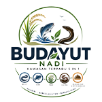

BuDayUT NaDi Portal
Integrated Circular Farming System & Ecosystem
📊 Dashboard & Monitoring Utama
Aplikasi operasional inti sistem
→
🔗 NaDi-LINK
Jaringan & ekosistem kolaborasi
→
📈 Dashboard NaDi-Link
Analitik dan laporan jaringan
→
🌿 Eduwisata
Program wisata edukasi pertanian
→
📅 Reservasi Kunjungan
Pemesanan tempat & jadwal
→
🛒 NaDi-QuRing (Pemasaran)
Pusat pemasaran & konsinyasi produk
→